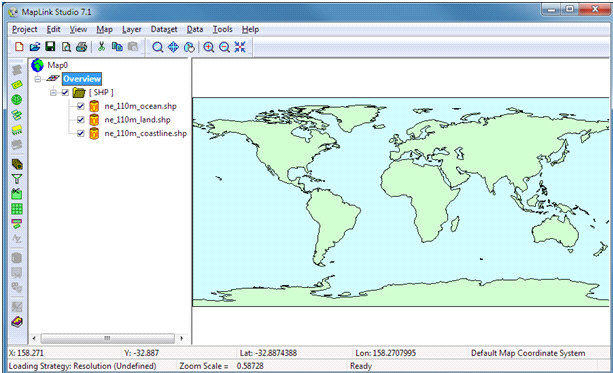
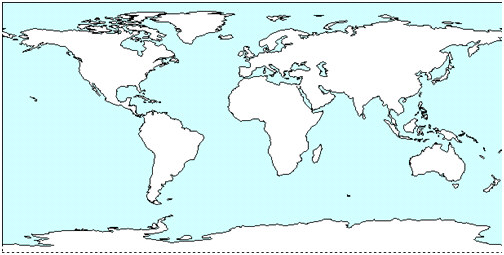
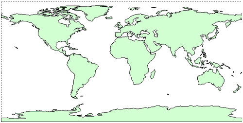
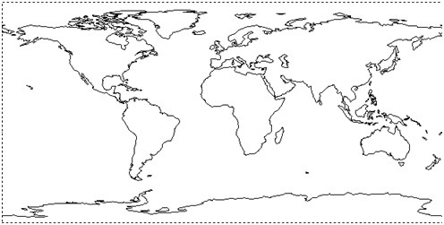
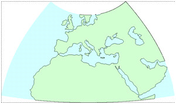
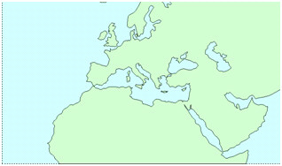
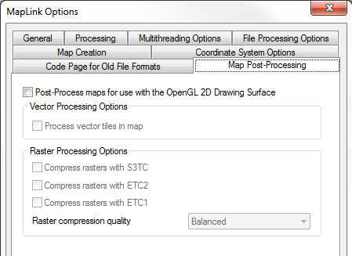

Tips for Fast Maps
Remove Unnecessary or Duplicate Vector Data
Beyond using source data at an appropriate scale for each
detail layer, it is also necessary to ensure that data that does not
contribute anything to the appearance of the detail layer is not
included in the map.
As a simple example, when creating a simple overview layer you
may decide that you want to include oceans, land masses and coastlines,
so each is added to the layer in the project. The fill colours of the
land and ocean polygons is then set to give the desired appearance.
Overall the layer would look like this:

While the layer gives the desired appearance, there are two
things that could be changed to make the layer simpler, and thus
faster, without affecting its appearance.
The first area for improvement stands out if each of the
source items are viewed independently:

Ocean Features

Land Features

Coastline Features
When the rendering for the ocean and land features was
configured in the Feature Book, the default line rendering was left
with the default setting of one pixel wide black lines. This means that
when the map is displayed the coastline edges are actually rendered
three times (once from each feature type), whereas this only needs to
happen once. This could be done by turning off line rendering for the
ocean and land features - however with this data there is no difference
between the coastlines features and the edges polygons from the land
features. This means that if the line rendering for the land features
is left enabled the coastlines features can be removed from the layer
entirely without affecting how the layer looks.
The second area for improvement is in the data used to
visualise ocean areas, in which the data consists of polygons that have
the land areas cut out. Instead of using these potentially quite
complicated polygons it would be much more efficient to use a simple
rectangle that covered the globe for the ocean areas, and have the land
features drawn on top. A simple source file to use for this purpose is
provided with a MapLink Pro installation in the following folder:
- data/ascii/Background.ascii
In combination these changes have reduced the amount of data
in the layer to one third of what it was originally without changing
the appearance of the layer at all, which gives a corresponding
increase in runtime performance of the map.
In summary:
- Remove line data whose visual effect can be duplicated by
enabling polygon edge rendering in another feature.
- Use simple rectangles that appear behind other data in the
layer to fill large background areas instead of many complex polygons.
Use Feature Masking to Remove Unwanted Features
When using data types that include many features within a
single source file, such as VPF, to build layers it is frequently the
case that not all features should be included in the layer. Making
these features invisible by clearing the rendering styles through the
feature book does not stop them from being included in the map, which
means that the map requires more disk space and memory.
In high level overview layers this can include text and point
features whose size is usually specified relative to the scale of the
map being displayed as they are often too small to be seen when viewing
the overview layer.
Feature masking stops these features from being included in
the map, which means that they do not have to be considered at runtime
for display thus increasing performance.
Use Output Clipping instead of Geodetic Clipping
When reprojecting a map containing vector data, features
around the edge of the map have additional points inserted in order to
ensure they appear correctly in the output projection, as often
straight lines in the source data are curved after the projection has
taken place. When the extreme edges of the layer are not of interest
output clipping removes these curved edges, reducing the complexity of
background areas of the map.

Geodetic Clipping

Output Clipping
Enable Raster Downsampling for Raster Datasets
Also referred to as raster pyramiding, this option creates a
pyramid of tiles from the original raster(s) of decreasing resolution.
At runtime the level of the pyramid most suitable for the current
display scale will be shown, which substantially reduces the memory
requirements for displaying large rasters while still allowing them to
be shown at their full resolution when zoomed in.
This option is enabled by default for raster datasets
Avoid Unnecessary Use of Render Levels
Using render levels can be invaluable for visualising complex
features, however they come at a runtime cost to do so. Render levels
should not be used to set the drawing order of data if the same effect
can be achieved by reordering the features that make up the layer.
Enable Overview Layer Generation
If the map does not naturally have several detail layers that provide an increasingly detailed view of the same data, consider enabling automatic overview layer generation.
This ensures that detailed maps will contain suitable detail
layers for use when viewing large extents. Without these overview
layers a detailed map would require significant amounts of memory to display in its entirety and would correspondingly be slow to draw.
Platform Specific Tips
The steps listed above apply to maps generated for any MapLink Pro
platform. Depending on the target environment of the map there are
additional steps that can be taken to improve map runtime performance.
Which set of guidelines applies depends on the MapLink Pro Drawing
Surface used by the end application. If you don't know which platform
your maps will be used with, ask your application's development team.
Windows using GDI
- Geometric pens. Windows provides a small number of built-in
line styles (the so-called cosmetic pen styles), and also allows a wide
range of line styles to be defined using geometric pens. The first five
line styles in the Line Rendering list in the Feature Book are the
cosmetic pen styles. All other line styles are provided using geometric
pen facilities. The rendering performance will be greatly improved when
cosmetic pens are used, so geometric pens should be used sparingly, and
avoided altogether where possible.
- Line thicknesses. The use of line thicknesses greater than
1 will affect the rendering performance. Of the cosmetic pens, only the
solid line style can be used in conjunction with line thicknesses
greater than 1. It is therefore tempting to combine the use of
geometric pens with the use of thick lines. This has a very significant
impact upon the performance, and the impact will increase as the line
thickness increases. Rendering of this sort should therefore be used
only in very limited cases.
- Complex line styles. Complex line styles are invaluable for
providing clear natural representations of roads and similar linear
features. By its nature, it inevitably makes use of line thicknesses
greater than one for the standard rendering, the background rendering
or both. In addition the number of lines to be rendered for the given
feature class doubles or trebles depending upon whether centre
rendering, background rendering or both are enabled. It is therefore
sensible to limit the use of multi-part rendering and to follow the
guidelines above concerning the use of geometric pens and thick lines
when multi-part rendering is used.
- Fill styles. The standard fill styles provided by Windows
are the solid, hatched and hollow patterns that comprise the first
eight entries in the Polygon Rendering fill style list in the Feature
Book. The other fill styles are instances of the so-called user-defined
fill style that is supported by Windows. User-defined fill styles have
a significant impact on rendering performance, so they should be used
sparingly. Instead of using a user-defined fill style to simulate a
colour that is not present in your palette, consider the use of the
Pastel palette.
- Fonts. Limit the number of separate fonts used, as there is
a cost involved in setting up each font. Each combination of text
style, scale, colour and alignment constitutes a separate font.
Reducing the number of separate fonts used also usually leads to
clearer, more readable maps.
- Hershey font. If text orientation issues are causing a
performance degradation, consider the use of the Hershey font. This is
a single vector font that is rotated as necessary according to the text
orientation. The text rotation operation has a much smaller impact on
performance than does the creation of a separate font for each separate
orientation. The Hershey font of course does not have the visual appeal
of the other fonts.
- Keyholing. Use keyholing in cases where the dataset
contains polygons with holes. Keyholing will always improve
performance, even if relatively few holes exist, but the improvement
will be greatest in the presence of large numbers of holes.
- Vector optimisation. The use of vector optimisation (where
objects of the same type are batched together for rendering purposes)
will give a significant improvement in run-time performance. Vector
optimisation can be used in any layer of the map where you do not need
to interrogate individual objects within the layer, and where you do
not need to apply complex line styles to any of the line features in
the layer. The improvement may be particularly noticeable if
optimisation for compression is used in conjunction with the Map
| Advanced option to control the internal coordinate space.
This can allow some or all of the objects in the map to be coded into a
smaller number of bits in the output file than would otherwise be the
case. The resultant reduction in file sizes is particularly valuable
when the data is being downloaded across a low bandwidth connection.
This option should be used with caution, however, as it is
easy to degrade the precision of the data by choosing inappropriate
conversion factors.
- Custom Linestyles. These are expensive to draw as each line
segment has to be drawn separately.
X11
- Line thicknesses. The use of line thicknesses greater than
1 may affect the rendering performance. This is X-Server dependent.
- Complex line styles. Complex line styles are invaluable for
providing clear natural representations of roads and similar linear
features. By its nature, it inevitably makes use of line thicknesses
greater than one for the standard rendering, the background rendering
or both. In addition the number of lines to be rendered for the given
feature class doubles or trebles depending upon whether centre
rendering, background rendering or both are enabled. It is therefore
sensible to limit the use of multi-part rendering and to follow the
guidelines above concerning the use of geometric pens and thick lines
when multi-part rendering is used.
- Fonts. Limit the number of separate fonts used, as there is
a cost involved in setting up each font. Each combination of text
style, scale, colour and alignment constitutes a separate font.
Reducing the number of separate fonts used also usually leads to
clearer, more readable maps.
- Keyholing. Use keyholing in cases where the dataset
contains polygons with holes. Keyholing will always improve
performance, even if relatively few holes exist, but the improvement
will be greatest in the presence of large numbers of holes.
- Raster symbols. Avoid the use of Raster symbols as these
consume large amounts of X-Server resources.
- Vector optimisation. The use of vector optimisation (where
objects of the same type are batched together for rendering purposes)
will give a significant improvement in run-time performance. Vector
optimisation can be used in any layer of the map where you do not need
to interrogate individual objects within the layer, and where you do
not need to apply complex line styles to any of the line features in
the layer. The improvement may be particularly noticeable if
optimisation for compression is used in conjunction with the Map
| Advanced option to control the internal coordinate space.
This can allow some or all of the objects in the map to be coded into a
smaller number of bits in the output file than would otherwise be the
case. The resultant reduction in file sizes is particularly valuable
when the data is being downloaded across a low bandwidth connection.
This option should be used with caution, however, as it is
easy to degrade the precision of the data by choosing inappropriate
conversion factors.
- Raster Data.
- 8bit data is significantly quicker to draw and process than
24bit depths.
- If performance is key than TIFF is faster to decode than
PNG which is faster than JPEG to decode.
- 24bit raster data cannot have the brightness, contrast or
gamma changed at runtime.
- Custom Linestyles. These are expensive to draw as each line
segment has to be drawn separately.
Embedded, Mobile and OpenGL
- Line thicknesses. Solid lines with a thickness of 3 pixels
or greater are slightly slower to render than solid lines that are 1 or
2 pixels, therefore rendering performance can be improved by reducing
the number of features using thicker lines on complex layers. Patterned
line styles are not affected.
- Complex line styles. Complex line styles are invaluable for
providing clear natural representations of roads and similar linear
features. However, they effectively multiply the number of lines that
need to be rendered for the map by the number of components the line
style is made from. Overuse of these line styles can therefore have a
negative impact on rendering performance.
- Fonts. Limit the number of separate fonts used, as each
font used requires additional system resources to render. When using
dynamically sized fonts (e.g. when a feature's text size is specified
in Map Units), setting the minimum size the smallest desired display
size will reduce the amount of resources consumed by the font for text
sizes too small to be readable. Unlike the other targets, using
different colours, alignments and rotations for a particular font does
not require additional resources or noticeably impact rendering
performance.
- Raster Nugget Size. This option is accessible in the Map
Creation tab of the MapLink Pro Studio Options panel, located under Options in the
Tools menu. The default value of 512x512 is suitable for other platform
targets, but is smaller than necessary for this target. Values of
1024x1024 will generally improve rendering performance on mobile or
embedded platforms, while 2048x2048 is suitable for desktop systems.
- Map Post Processing. This option is accessible on the Map
Post-Processing tab of the MapLink Options panel, located under Options
in the Tools menu.

When creating maps for use with the OpenGL drawing surface,
certain processing steps can be done at the time of map creation in
order to reduce the amount of calculation that must be done at runtime,
controlled through this dialog. Maps containing vector data intended
for use with the OpenGL drawing surface should generally always have
the vector processing option enabled.
Maps containing raster data should normally have one or more
of the raster processing options enabled depending on how they will be
used:
- Maps created for desktop systems should have the S3TC
compression option enabled.
- Maps created for mobile or embedded systems should have the
ETC1 compression option enabled.
- If the target device for the map is recent for either
desktop, mobile or embedded devices, the ETC2 compression option can be
enabled instead of either of the other two options.
If multiple formats are selected, the MapLink Pro runtime will
choose the most appropriate format to use when displaying the map based
on the capabilities of the device it is running on. There is no runtime
penalty for enabling multiple raster formats.
The post-processing settings are stored as part of the MapLink Pro
Studio configuration and not the project file. These settings therefore
apply to all maps created with MapLink Pro Studio.